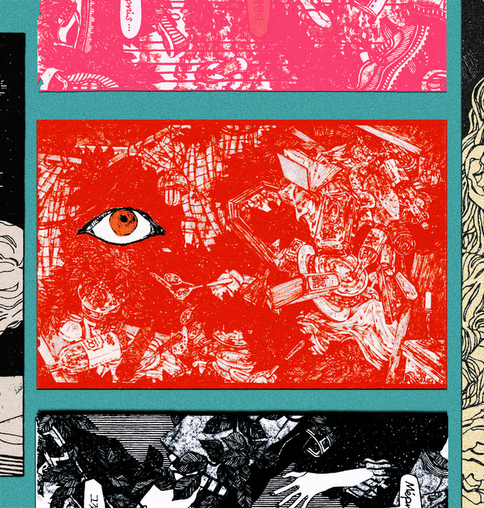

A Gold Fish
L'Impossible 이라는 제목은 조르주 바타유의 [불가능] 에서
따왔다. [L'Impossible/Georges Bataille] 불가능이라는 말은 적대적이지만
안전한 한계처럼 느껴진다. 불평하던 사람들이 느닷없이 수풀 속으로
사라져버린다. 하지만 누구도 갈 수 없는 지옥에 간다면; 예컨대 9번 지옥에
가버린다면 그 곳엔 연옥으로 가는 길이 있을 것이다. 그래서, 어쩌면 9번은
게이트이다. 그 어떤 사람도 절대 [불가능하다] 고 생각했던 일을
누군가 해내는 것을 생각했다. 나에게는 L'Impossible 의 모든 장면이
불가능이다.
-
I adopted the name of this book, [L'Impossible], from [L'Impossible/The Impossible] by Georges Bataille. The word Impossible feels hostile, but also like a safe limit. The crowd was complaining and suddenly vanished into the thicket. However, if someone is able to enter a circle of hell where no one can go — the 9th for example — there must be a path straight to purgatory. Thus, Number 9 might be a gate. I imagined someone accomplishing something that absolutely no one had thought possible. To me, every scene of [L'Impossible] is something impossible.
-
I adopted the name of this book, [L'Impossible], from [L'Impossible/The Impossible] by Georges Bataille. The word Impossible feels hostile, but also like a safe limit. The crowd was complaining and suddenly vanished into the thicket. However, if someone is able to enter a circle of hell where no one can go — the 9th for example — there must be a path straight to purgatory. Thus, Number 9 might be a gate. I imagined someone accomplishing something that absolutely no one had thought possible. To me, every scene of [L'Impossible] is something impossible.
금붕어
A father of two, 080526-080626, L’Impossible
A father of two, 080526-080626, L’Impossible

ⓒ 2026 피플즈 PEOPLES All Rights Reserved.